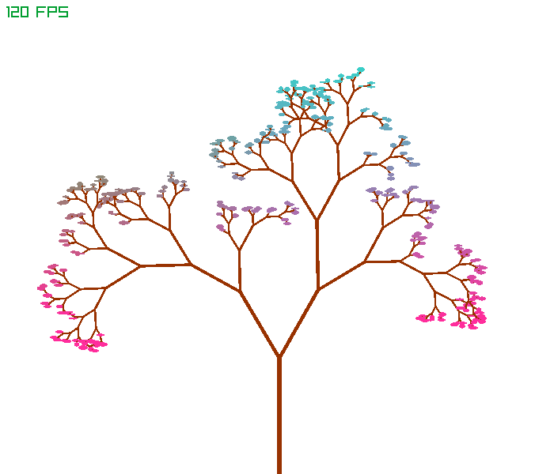
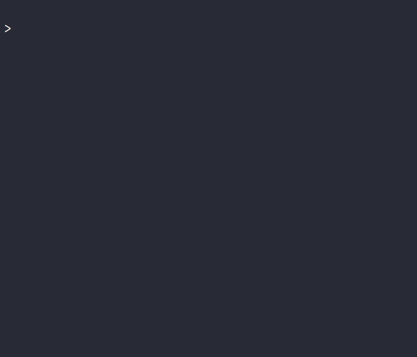
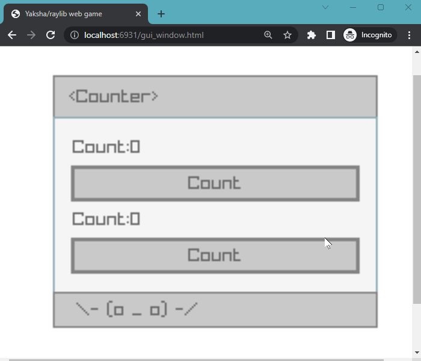

A randomly generated tree moving in the wind.

Click to see code sample
import raylib as rl
import raylib.utils
import libs.numbers as num
import libs.perlin
import libs.random
class State:
width: float
height: float
angle: float
frame_count: u64
blue: rl.Color
green: rl.Color
color3: rl.Color
def branch(x: float, y: float, length: float, angle: float, s: State) -> None:
if length < 4.0f:
leaf_width = random.random_betweenf(1.0f, 3.0f)
leaf_height = random.random_betweenf(3.0f, 6.0f)
lerped_green = utils.lerp_color(s.green, s.blue, utils.remap(x, 0.0f, s.width, 0.0f, 1.0f) * 2.0f)
color = utils.lerp_color(lerped_green, s.color3, utils.remap(y, 0.0f, s.height, 0.0f, 1.0f) * 1.5f)
rl.draw_ellipse(num.f2i(x), num.f2i(y), leaf_height, leaf_width, color)
return
wind = utils.sin_deg(perlin.noise1df(num.uu2f(s.frame_count) / 50.0f)) * 100.0f * utils.sin_deg(num.uu2f(s.frame_count) / 2.0f)
next_y = y - length * utils.cos_deg(angle)
next_x = x + length * utils.sin_deg(angle)
thick = utils.remap(length, 0.0f, s.height / 4.0f, 2.0f, 6.0f)
rl.draw_line_ex(rl.vector2(x, y), rl.vector2(next_x, next_y), thick, rl.color(152, 50, 1, 255))
r1 = random.random_betweenf(0.3f, 0.9f)
r2 = random.random_betweenf(0.5f, 0.8f)
branch(next_x, next_y, (length * r2), angle + s.angle + wind * 10.0f, s)
branch(next_x, next_y, (length * r1), angle - s.angle + wind * 10.0f, s)
def update_draw_frame(s: State) -> None:
rl.clear_background(rl.color(255, 255, 255, 255))
branch(s.width / 2.0f, s.height, s.height / 4.0f, 0.0f, s)
def main() -> int:
s: State = State()
s.angle = random.random_betweenf(30.0f, 45.0f)
s.width = 600.0f
s.height = 600.0f
s.frame_count = 0u64
s.blue = rl.color(0, 255, 214, 255)
s.green = rl.color(0, 255, 0, 255)
s.color3 = rl.color(255, 45, 156, 255)
rl.init_window(num.f2i(s.width), num.f2i(s.height), "Fractal Tree in the Wind")
rl.set_target_fps(120)
seed: u64 = random.init_random()
while not rl.window_should_close():
rl.begin_drawing()
update_draw_frame(s)
rl.draw_fps(0, 0)
rl.end_drawing()
s.frame_count += 1u64
random.set_seed(seed)
rl.close_window()
del s
return 0
An inefficient factorial calculation using recursion

Click to see code sample
import libs.console
def factorial(x: int) -> int:
if x <= 0:
return 1
return x * factorial(x - 1)
def main() -> int:
a = 0
while a < 10:
console.cyan( "factorial")
console.red( "(")
print(a)
console.red( ") = ")
println(factorial(a))
a = a + 1
return 0
A 2-in-1 counter as a web application (WASM)

Click to see code sample
import raylib as rl
import raylib.utils
import raylib.gui
import libs.numbers as num
def main() -> int:
width = 200
height = 160
counter1 = 0
counter2 = 0
rl.init_window(width, height, "Counter")
rl.set_target_fps(120)
while not rl.window_should_close():
rl.begin_drawing()
rl.clear_background(rl.color(255, 255, 255, 255))
gui.gui_panel(rl.rectangle(10.0f, 10.0f, num.i2f(width) - 20.0f, num.i2f(height) - 20.0f), "<Counter>")
widget_width = num.i2f(width) - 40.0f
# Counter 1
gui.gui_label(rl.rectangle(20.0f, 40.0f, widget_width, 20.0f), "Count:"+ num.i2s(counter1))
if gui.gui_button(rl.rectangle(20.0f, 60.0f, widget_width, 20.0f), "Count"):
counter1 = counter1 + 1
# Counter 2
gui.gui_label(rl.rectangle(20.0f, 80.0f, widget_width, 20.0f), "Count:"+ num.i2s(counter2))
if gui.gui_button(rl.rectangle(20.0f, 100.0f, widget_width, 20.0f), "Count"):
counter2 = counter2 + 1
# Asciimoji status bar
animation = (counter1 + counter2) % 3
if animation == 1:
gui.gui_status_bar(rl.rectangle(10.0f, num.i2f(height) - 30.0f, num.i2f(width) - 20.0f, 20.0f), " \\\\- (- _ -) -/")
else:
gui.gui_status_bar(rl.rectangle(10.0f, num.i2f(height) - 30.0f, num.i2f(width) - 20.0f, 20.0f), " \\\\- (o _ o) -/")
rl.draw_fps(20, 540)
rl.end_drawing()
rl.close_window()
return 0